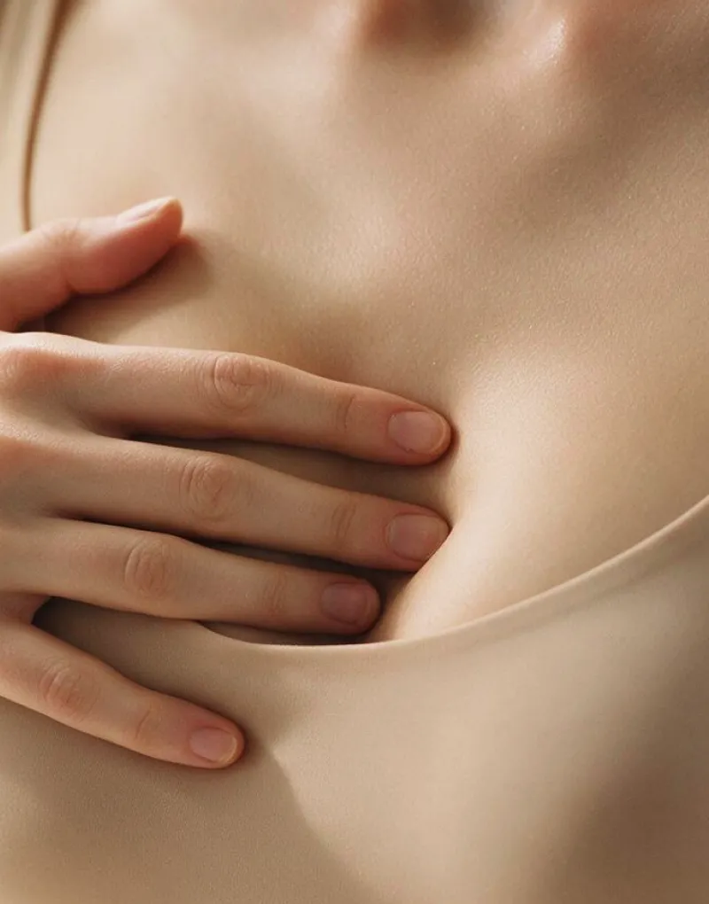

Профилактика — лучший метод поддержания здоровья.
Нужно внимательно относиться к своему здоровью и регулярно проводить самодиагностику в домашних условиях. Это быстрый и простой способ сразу заметить изменения и своевременно обратиться к врачу.
Что может быть нормой, а что требует немедленного обращения к гинекологу?
На этой странице ответы для тех, кто старше 50 лет
МГТ
Применение менопаузальной гормонотерапии может повышать риск развития мастопатии1
До 33% может увеличиваться риск ДДМЖ
при употреблении 2 и более порций красного мяса в пременопаузе1
До 3 раз может увеличиваться риск развития ДДМЖ
при позднем наступлении менопаузы после 52 лет1
Мастопатия после 50 лет имеет всё те же причины, что и в других возрастных категориях2:
Однако добавляется еще один немаловажный фактор — менопаузальная гормональная терапия1
МГТ
Не реже одного раза в год посещать гинеколога, даже если нет никаких жалоб, а также проводить самодиагностику.
Нужно внимательно относиться к своему здоровью и регулярно проводить самодиагностику в домашних условиях. Это быстрый и простой способ сразу заметить изменения и своевременно обратиться к врачу.

необходимо как можно быстрее посетить врача-гинеколога! Только профессиональная диагностика поможет установить причину неприятных симптомов и подобрать правильное лечение.
Настоящая информация предназначена только для медицинских и фармацевтических работников


Информация ознакомительная. Требуется консультация специалиста.